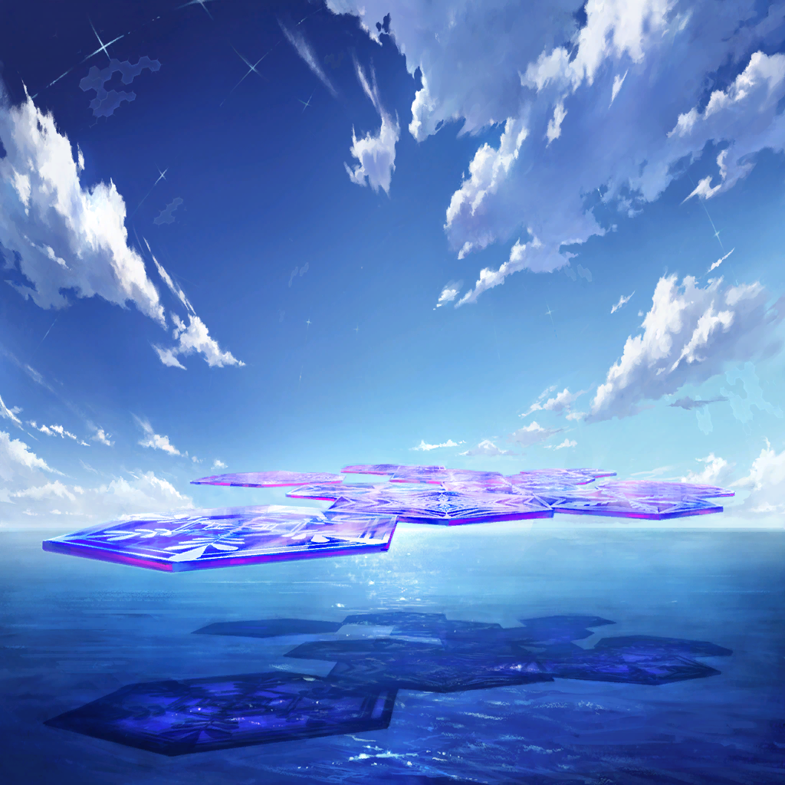

ワギナオ
いや、この状況だ
食料として確保しとくべきだったか？
ワギナオ
相当の労力が必要だろうがな…
ワギナオ
穢れを持っていなかった）
ワギナオ
嫉妬罪域＜インディヴィア・ベルト＞
とは違う、んだな）
すべてが嫉妬の罪に淀み果てるのは、
もうしばらく後の話だ）
ワギナオ
ワギナオ
やっぱ泳いでくれ
ワギナオ

ワギナオ
ってクェンス、沈んでるぞ!?
運動とか、苦手なんだ…
ワギナオ
リル、少しでいい！
この男を海面から持ち上げれるか？
うん、しょ…っ
ワギナオ
もう少し慎重に…！
| |
|  | |
ワギナオ |
…これで、最後か？ |
| クェンス | みたい、だな |
| リル | ふたりとも、おつかれー |
| クェンス | まさか、あんな生き物がいるとはな いや、この状況だ 食料として確保しとくべきだったか？ |
ワギナオ |
あのサイズを解体するのは 相当の労力が必要だろうがな… |
ワギナオ |
（だが、今の魔物は 穢れを持っていなかった） |
ワギナオ |
（やはり、俺たちの時代の 嫉妬罪域＜インディヴィア・ベルト＞ とは違う、んだな） |
| 堕罪者 | （この海は、まだ穢れを知らぬ すべてが嫉妬の罪に淀み果てるのは、 もうしばらく後の話だ） |
ワギナオ |
………… |
| クェンス | …なあ、ワギナオ |
ワギナオ |
どうかしたのか？ |
| クェンス | 今の戦闘でマギルが尽きた やっぱ泳いでくれ |
ワギナオ |
はぁ!? |
| |
ワギナオ |
そういう、ことは！ 先に…！ ってクェンス、沈んでるぞ!? |
| クェンス | 俺は…な…？ 運動とか、苦手なんだ… |
ワギナオ |
言ってる場合か!? リル、少しでいい！ この男を海面から持ち上げれるか？ |
| リル | う、うんっ！ うん、しょ…っ |
| クェンス | ぐげっ、首の骨が… |
ワギナオ |
わーっ、待てリル！ もう少し慎重に…！ |
| リル | ちゅうもんが、多いっ… |
| 船員 | …兄ちゃんたち、何してんだ？ |